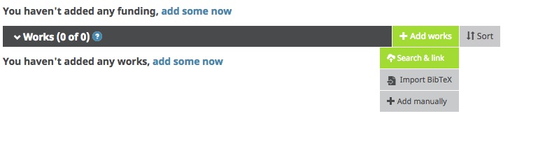
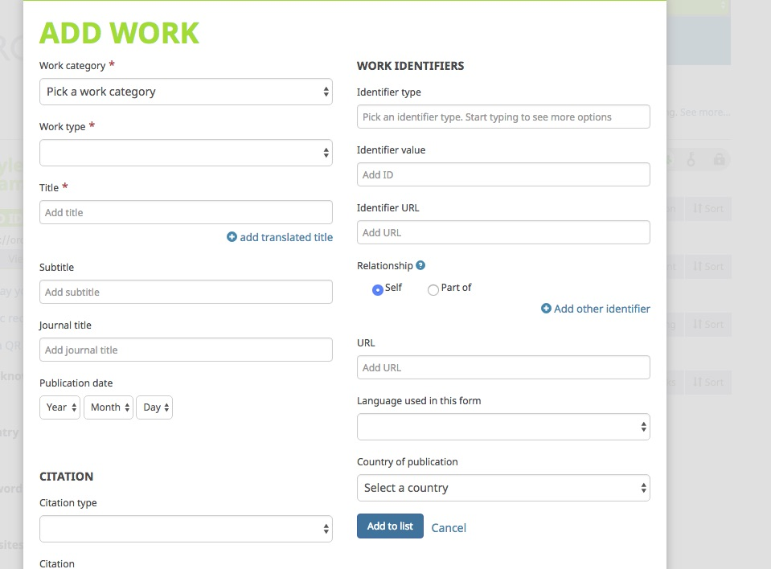

45 Minutes
After creating an ORCiD and validating your e-mail address, you’ll have access to your ORCiD profile. You’ll notice that ORCiD includes areas for you to enter CV-like material. You can enter as much or as little as you like: depending on your privacy settings, this information is what other people will see when they look up your ORCiD.

Exercise 2A. Manually add a citation to your OrCidD Profile

Add a citation to your profile manually using the menu option. 
Solution 2A
Go to Add works -> Add manually. Discuss the pros and cons of doing a manual upload
Exercise 2B. Use a wizard to add citations to your ORCiD Profile
Use the CrossRef or DataCite wizard to find and add content to your OrCiD profile.
Solution 2B
Go to Add works -> Search & link -> CrossRef or DataCite. Try searching by name, OrCiD, or other options. Discuss the quality of the citations.
Exercise 2C. Add your BibTex citations to your OrCidD Profile
Take a list of BibTex citations generated in the DOI lesson and add them to your profile
Solution 2C
Go to Add works -> Import BibTex. How well did the import do?
Let’s discuss the pros and cons of uploading citations from BiBTeX files vs. relying on the ORCiD wizards.
Previous: Getting Started with OrCiD Next: OrCiD Benefits